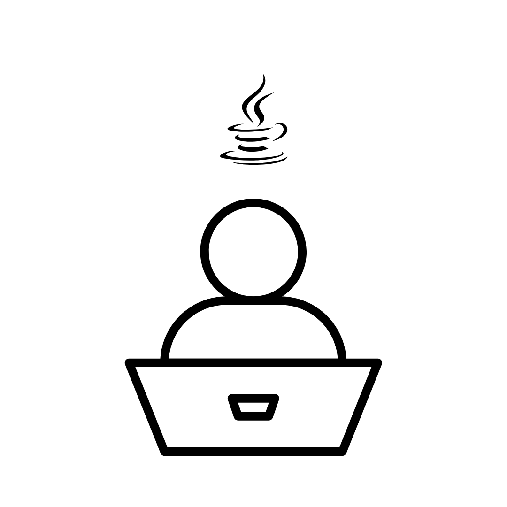
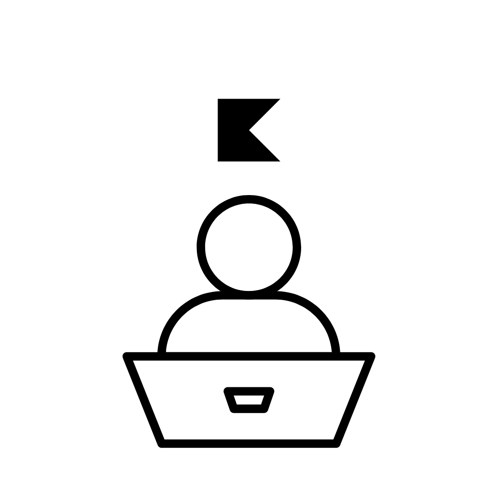
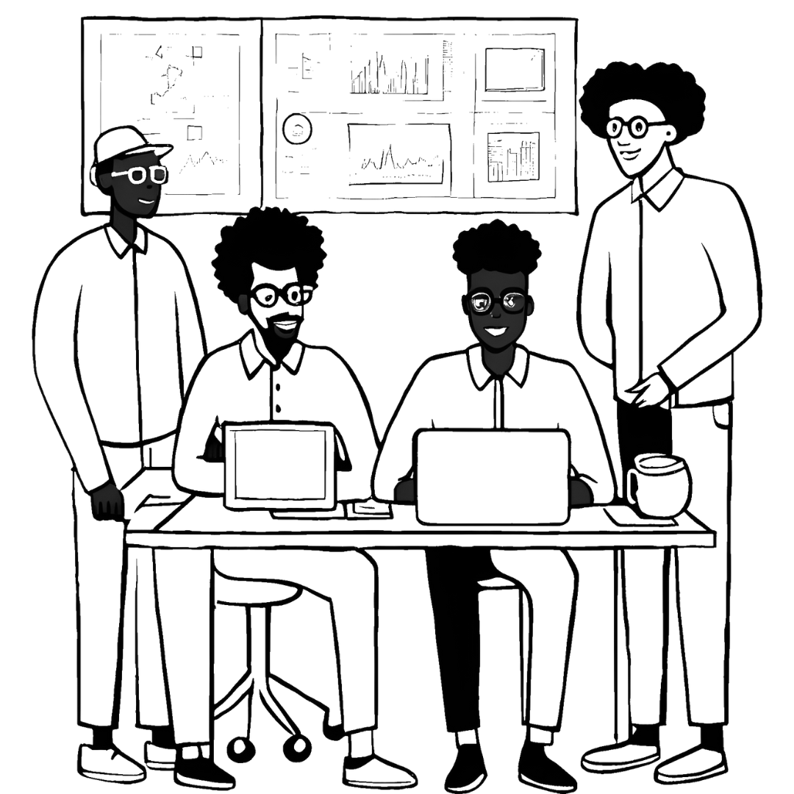

Novice Programmer
You're new to coding, and you're eager to get your foot in the door.

Java Developer
You're part of the large majority of Java users who haven't yet made the transition to Kotlin.

Kotlin Developer
You're familiar with using Kotlin, but still fall back to Java when you need to get things done.

Teams
Your team is ready to transition to Kotlin, but unsure how to get up-to-speed & transition quickly.
Welcome developer! Here are our current recommendations, but come back later as more comes out.
For Kotlin researchers:
1. Check out our Kotlin Kinetics Patreon and keep up with personal research! As a bonus, we've provided some free content.
2. Keep up with the latest content development:
- Sign up by email to get updates on our newest product developments
- Follow Kotlin Kinetic socials
Welcome developer! We're glad you're here. Here are our current recommendations, but come back later as more comes out.
Learn Kotlin in small snippets
1. Check out our Kotlin Kinetics Patreon and keep up with personal research! As a bonus, we've provided some free content.
2. Keep up with the latest content development:
- Sign up by email to get updates on our newest product developments
- Follow Kotlin Kinetic socials
Popup workshops
Welcome developer! We're glad you're here. Here are our current recommendations, but come back later as more comes out.
Learn Kotlin in small snippets
1. Check out our Kotlin Kinetics Patreon and keep up with personal research! As a bonus, we've provided some free content.
2. Keep up with the latest content development:
- Sign up by email to get updates on our newest product developments
- Follow Kotlin Kinetic socials
Popup workshops
Kotlin Kinetics for teams
Kotlin Kinetics offers private, customized Kotlin training that fits the needs of the organization - without the complexities often associated with coordinating traditional workshop formats.
Book Your Private Kotlin Workshop in 2 Simple Steps:
1. Explore our Workshop Options
Workshops are combined interactive labs/lectures, which can range from 1 day to 3 days training. Select one of our sample workshops and receive full abstract via email.
Programming Android with Kotlin
Target Audience:
Android engineers (6+ million globally)
Going from Java to Kotlin: Making Kotlin work for you
Target Audience:
Java engineers & beginner Kotlin engineers
Kotlin Coroutine Mechanisms - Playful Exploration of Coroutines
Target Audience:
Kotlin engineers eager to master coroutines
In this hands-on workshop, you'll learn how to make Kotlin work for you through:
- Kotlin essentials and language features
- Simplifying code & ensuring safeguarded logic
- Solving concurrency issues in Android
- Performance optimization and IDE shortcuts
- Interactive labs on bug fixes and refactoring
Leave with the skills to start building efficient Android apps using Kotlin.
Get Workshop Abstract
This workshop explores how Kotlin boosts productivity in day-to-day development with Android. Attendees will walk through digestible, relatable examples in:
- How Kotlin simplifies code and lends itself to safeguarded logic
- Leveraging Kotlin's language features to solve concurrency problems in Android
- Performance considerations
- IDE shortcuts, tooling, and more related to measuring overall performance improvements
Workshop attendees receive a crash course on everything you need to start writing Android in Kotlin. Every section is an interactive lab in which workshop attendees walk through bug fixes /refactors with Kotlin.
Get Workshop Abstract
In this workshop, you'll deepen your understanding of Kotlin coroutines through fun, hands-on examples. Key topics include:
- Understanding coroutine behavior and mechanics
- Practical use cases and common patterns
- How coroutines work with threads and async tasks
- Debugging and performance considerations
Whether you're just starting with Kotlin or have some experience with coroutines, this session will give you a fresh perspective on asynchronous programming in Kotlin.
Get Workshop Abstract
2. Ready to Get Your Personalized Workshop?
Fill out the inquiry form below to book your own customized team workshop.